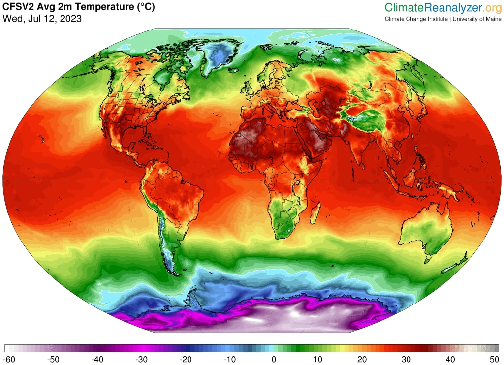

Concepto
El calentamiento global se refiere al aumento gradual de la temperatura promedio de la atmósfera de la Tierra y de los océanos a lo largo del tiempo. Este fenómeno se atribuye principalmente a las actividades humanas que liberan grandes cantidades gases de efecto invernadero que resultan de las actividades humanas, incluyendo la deforestación y quema de combustibles fósiles como el petróleo y el carbón.
¿Por qué es preocupante el calentamiento global?
El rápido aumento de los gases de invernadero es un problema porque está cambiando el clima tan rápido que algunos seres vivos no pueden adaptarse. En 2023, un artículo aseguraba que, de las cinco colonias de pingüinos emperador conocidas en la región del mar de Bellingshausen (Antardida), todas menos una experimentaron lo que muy probablemente fue un fracaso total de la reproducción debido a la pérdida de hielo marino, posiblemente uno de los efectos visibles del calentamiento global.
Igualmente, un clima nuevo y más impredecible impone desafíos únicos para todo tipo de vida y del que los científicos ya han derivado diversos puntos de no retorno en el planeta.
Un estudio publicado en diciembre de 2022, aseguró que el calentamiento global podría contribuir a generar tsunamis en el Ártico. El calentamiento global impacta en el Ártico con un aumento de temperatura de las aguas del océano y una disminución de los espesores de los glaciares. Ambos procesos dan lugar a un escenario idóneo para la formación de deslizamientos submarinos con potencial tsunamigénico.
¿No son naturales los cambios de temperatura?
La temperatura media global y las concentraciones de dióxido de carbono (uno de los principales gases de invernadero) han fluctuado en un ciclo de cientos de miles de años conforme ha ido variando la posición de la Tierra respecto del sol. Como resultado, se han producido las diferentes edades de hielo.
Sin embargo, durante miles de años, las emisiones de GEI a la atmósfera se han compensado por los GEI que se absorben de forma natural. Por lo tanto, las concentraciones de GEI y la temperatura han sido bastante estables. Esta estabilidad ha permitido que la civilización humana se haya desarrollado en un clima consistente.
Ahora los humanos han aumentado la cantidad de dióxido de carbono en la atmósfera más de un tercio desde la revolución industrial. Estos cambios tan significativos se han producido históricamente en el trascurso de miles de años pero ahora se producen en tan solo unas décadas.
El calor del 2023
De acuerdo con datos de la Agencia Espacial Europea- y la Organización Meteorológica Mundial (OMM), julio de 2023 fue el mes más caluroso a nivel global desde que se tienen registros, marcando así un nuevo récord histórico.
¿Qué pasó con el tiempo en julio 2023 en la Argentina?
De acuerdo con informes del Servicio Meteorológico Nacional (SMN), el invierno se caracterizó por ser más cálido que lo normal en gran parte del centro y norte del país, especialmente en los primeros y últimos días de julio. En sectores del norte argentino hubo valores de hasta 6 y 7°C por encima del promedio.
Entre el 21 y 22 de julio el SMN registró el ingreso de aire cálido y húmedo, que provocó temperaturas mínimas inusualmente altas para la época en Reconquista (Chaco), con 22,4 °C; Gualeguaychú (Entre Ríos), con 21,6 °C; y también en Aeroparque (Ciudad Autónoma de Buenos Aires), con 18,3 °C; entre otras.